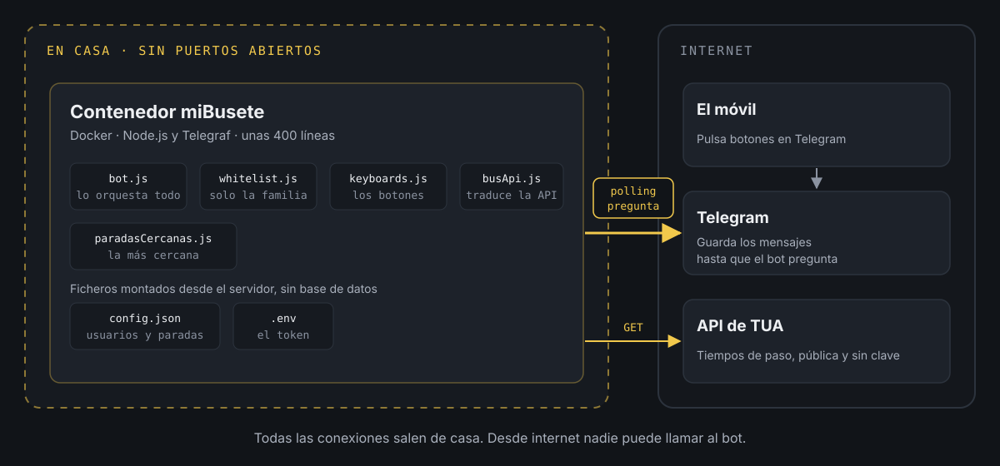
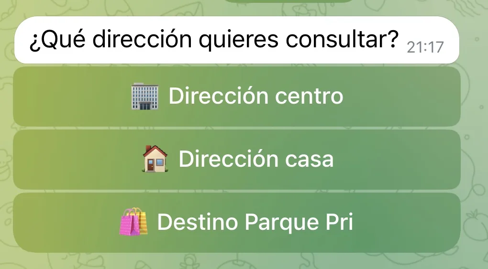
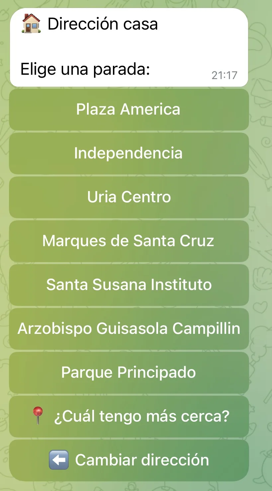
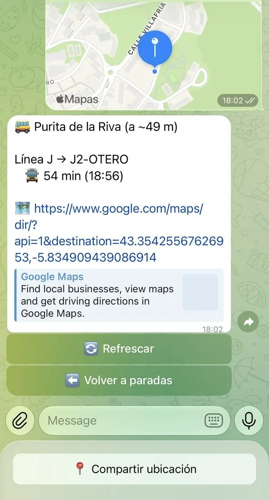

Cómo crear un bot de Telegram.
Mi hija tiene un iPhone 7 Plus heredado de su madre (que a su vez lo heredó de mí), y la aplicación oficial de los autobuses de Oviedo no le iba bien. Tardaba muchísimo en cargar y muchas veces daba error.
Que tu hija adolescente, que empieza a moverse por el centro, no pueda saber rápido cuánto le queda al bus ni dónde cogerlo es un problema. Pero los padres tech usamos los problemas como excusa para trastear.
En su día me hice una aplicación para el reloj Pebble (un smartwatch con pantalla de tinta electrónica) que usaba la API pública de la web de los autobuses urbanos. Resulta que la API sigue siendo la misma y sigue siendo pública. Allá vamos, pero... ¿cuál es la solución más rápida y que más valor aporta?
Un bot de Telegram
En casa no usamos WhatsApp para hablar entre nosotros, usamos Telegram, que permite crear bots. Como ya tenía el servidor con Docker encendido todo el día, me dije: ¿y si creo un bot privado y fácil de usar, al que le indiques si vas hacia el centro o hacia casa y te diga cuánto les queda a nuestras líneas en las paradas de siempre? ¿Y si además añado las de Parque Principado (el clásico centro comercial de las afueras al que van los adolescentes a pasar la tarde), para tenerlas a mano cuando vaya allí? ¿Y si además le busco la parada más cercana según su ubicación, por si tiene una más cerca que no conoce?
A ello nos pusimos, y así nació miBusete. Se maneja solo con botones, sin escribir nada, y responde a una única pregunta: cuánto le queda al bus que me interesa, en minutos y con la hora estimada de llegada.
Cómo está montado
miBusete es un contenedor Docker con una aplicación en Node.js y la librería Telegraf, que simplifica mucho hablar con Telegram. Son seis ficheros y unas 400 líneas en total. No tiene base de datos: todo lo que necesita (quién puede usarlo, qué paradas y qué líneas) vive en dos ficheros de configuración.

La clave está en cómo recibe los mensajes. Un bot de Telegram puede funcionar de dos formas:
- Webhook: Telegram llama a tu servidor cada vez que alguien pulsa un botón. Para eso tu servidor tiene que estar publicado en internet, con una URL y un certificado HTTPS, y hay que abrir un puerto en el router.
- Polling: es el bot el que pregunta a Telegram cada poco si hay algo nuevo. Telegram guarda los mensajes hasta que el bot los recoge.
Elegí polling. Todas las conexiones salen de casa hacia fuera (a Telegram y a la API de los autobuses), así que no hay nada mío expuesto: ni puertos abiertos, ni URL pública, ni certificados. Si mañana apago el contenedor, desde fuera no se nota nada más que el bot no contesta.
La otra decisión importante fue no dejar que el bot hable directamente con la API de TUA (la empresa de autobuses). En medio hay un módulo, busApi.js, que traduce su respuesta a algo sencillo: línea, minutos y hora de llegada. Si un día la API cambia, solo hay que tocar ese fichero.
Crear el bot en Telegram
Los bots se crean desde el propio Telegram, hablando con otro bot:
- Abre una conversación con
@BotFathery escribe/newbot. - Elige un nombre visible y un nombre de usuario que termine en
bot. Los cortos suelen estar cogidos, así que toca echarle imaginación. - BotFather te devuelve un token. Guárdalo bien: quien lo tenga controla el bot.
- Si quieres, desde
/mybotspuedes añadirle descripción y foto.
El token va en un fichero .env, fuera del código:
TELEGRAM_BOT_TOKEN=coloca_aqui_el_token_de_botfatherCon eso ya se puede escribir el bot más sencillo posible. Primero, las dos dependencias:
npm install telegraf dotenvY un fichero src/bot.js que contesta a /start:
require('dotenv').config();const { Telegraf } = require('telegraf'); const bot = new Telegraf(process.env.TELEGRAM_BOT_TOKEN); bot.start((ctx) => ctx.reply('Hola, soy miBusete')); bot.launch();console.log('miBusete arrancado (polling)');bot.launch() arranca el polling sin configurar nada más. Al lanzarlo con node src/bot.js (o en el contenedor), debería verse esto en el log:
miBusete arrancado (polling)Si le escribes /start desde Telegram, te contesta. A partir de aquí, todo es añadir botones.
Solo para la familia: la whitelist
Un bot de Telegram es público: cualquiera que dé con su nombre puede escribirle. Para que solo lo usemos en casa, todos los mensajes pasan antes por un filtro con la lista de usuarios permitidos. En Telegraf eso es un middleware, una función que se ejecuta antes que cualquier otra:
function crearWhitelistMiddleware(whitelist) { const permitidos = new Set(whitelist.map(String)); return (ctx, next) => { const userId = String(ctx.from?.id || ''); if (!permitidos.has(userId)) { console.warn(`[whitelist] Acceso rechazado para userId=${userId}`); return ctx.reply('No tienes acceso a este bot.'); } return next(); };} bot.use(crearWhitelistMiddleware(config.whitelist));Si el usuario no está en la lista, el mensaje no llega a ningún botón ni comando. La lista está en config.json, junto a las paradas de cada dirección (los datos de este ejemplo son inventados):
{ "whitelist": [111111111, 222222222], "direcciones": { "ida": [{ "id": "1234", "nombre": "Parada de ejemplo" }], "vuelta": [{ "id": "5678", "nombre": "Otra parada" }] }}Tu identificador de Telegram te lo da el bot @userinfobot. Y hay un truco cómodo: como el filtro escribe en el log el userId rechazado, si alguien nuevo le escribe al bot, su identificador aparece en los logs y basta con copiarlo a la lista.
config.json y .env no se suben nunca al repositorio. Están en el .gitignore y en su lugar se publican plantillas (config.json.example y .env.example):
node_modules/.envconfig.jsonAntes del primer commit, un git status para comprobar que ninguno de los dos aparece en la lista.
La interfaz de navegación

El bot tiene cuatro pantallas: elegir dirección (hacia el centro, hacia casa o al centro comercial), la lista de paradas de esa dirección, el detalle de una parada con lo que le queda a cada línea y, por último, la parada más cercana. En el detalle hay un botón para refrescar y otro para volver.
Lo curioso es que el bot no recuerda nada entre pulsaciones. Cada botón lleva escrito dentro lo que significa, en un campo llamado callback_data:
direccion:idaparada:ida:1234refrescar:ida:1234Cuando pulsas "Refrescar", el botón ya dice qué dirección y qué parada estabas mirando, así que el bot no necesita sesiones ni base de datos. Captura cada tipo de botón con una expresión regular (bot.action(/^parada:(...):(.+)$/)) y listo.

La API de TUA es lenta (tarda varios segundos), y eso se nota. Por eso el bot contesta al momento con un "Consultando..." y después edita ese mismo mensaje con el resultado. El usuario ve que algo pasa, el chat no se llena de mensajes repetidos al refrescar y, si algo falla, el error aparece ahí mismo en lugar de dejar un "Consultando..." eterno.
Además, esto esquiva un error clásico de Telegram: si intentas editar un mensaje con exactamente el mismo texto que ya tiene (al refrescar dos veces seguidas, los minutos no han cambiado), Telegram lo rechaza con message is not modified. Al pasar siempre por "Actualizando...", el texto siempre cambia.
¿Cuál tengo más cerca?
Dentro de cada dirección hay un botón para buscar la parada más cercana. Al pulsarlo, el bot muestra el botón nativo de Telegram para compartir la ubicación y, con las coordenadas, calcula la distancia a todas las paradas de esa dirección con la fórmula de Haversine (la distancia entre dos puntos sobre una esfera):
function distanciaMetros(lat1, lng1, lat2, lng2) { const dLat = rad(lat2 - lat1); const dLng = rad(lng2 - lng1); const a = Math.sin(dLat / 2) ** 2 + Math.cos(rad(lat1)) * Math.cos(rad(lat2)) * Math.sin(dLng / 2) ** 2; return 6371000 * 2 * Math.atan2(Math.sqrt(a), Math.sqrt(1 - a));}
Con unas 80 paradas por dirección, recorrerlas todas es instantáneo. No hace falta ninguna API de mapas. El resultado incluye la distancia, los tiempos de esa parada y un enlace a Google Maps para llegar andando.
Aquí sí hay una pequeña excepción a lo de no guardar nada: el mensaje con la ubicación llega sin el callback_data del botón anterior, así que el bot apunta en memoria qué dirección pidió ese chat y lo borra en cuanto la usa.
Lo más entretenido fue conseguir las coordenadas, porque la API no las da. Resulta que la web de TUA dibuja un mapa por línea, y en el código fuente de cada página están las paradas con su latitud y longitud. Bastó con guardar el HTML desde el navegador, extraerlas con un pequeño script, clasificarlas por dirección y quitar duplicados. A veces los datos que necesitas ya están en la web, aunque no haya API.
Cosas a tener en cuenta
Un error silencioso parece un cuelgue. Durante unos días, buscar la parada más cercana dejaba el bot en "Buscando..." para siempre. No era la API: los logs del contenedor (docker logs) mostraban 400: Bad Request: message can't be edited. El mensaje se había enviado con un teclado de un tipo y luego se intentaba editar con otro. Quitarlo lo arregló, pero lo que de verdad lo hacía difícil era que el error se tragaba en silencio. Desde entonces, todo fallo va al log y al propio chat.
Un filtro de texto exacto falla sin avisar. Para no mostrar líneas que no interesan, el bot compara el destino de cada bus con una lista de destinos permitidos, letra a letra. Al reorganizar esa lista coloqué los destinos de una línea en el sentido contrario, y el bot empezó a decir "Sin servicio" en casi todas las paradas. Sin errores, solo resultados vacíos. Lo resolví mirando la respuesta real de la API y comparándola con la configuración:
curl -s https://www.tua.es/rest/estimaciones/1234La API no es oficial. Es pública y no pide clave, pero no está documentada, así que puede cambiar o desaparecer sin aviso. Por eso está aislada en un único módulo.
Por qué compensa
Hacer un bot de Telegram es gratis, fácil y rápido. Como prueba de concepto fue genial, y ahora lo usamos los tres para consultar el bus en un par de toques.
Funciona en cualquier dispositivo: es muy raro que un teléfono viejo se quede sin una versión de Telegram que funcione, e incluso puedo usarlo desde el PC con la aplicación de escritorio o la web.
Y como todo vive en un contenedor y un par de ficheros, hacer cambios y volver a desplegarlos es cuestión de minutos.
Espero que te sirva para crear ese bot que tenías en mente desde hace tiempo y que pensabas que era algo súper complicado. ¡Nada más lejos!